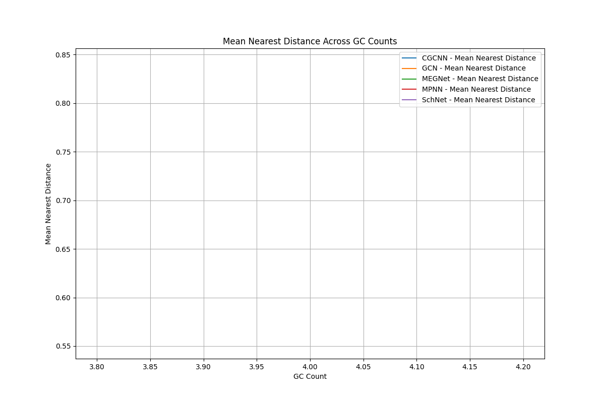
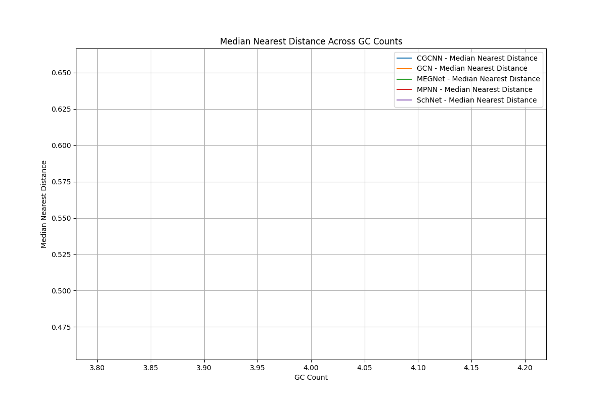

A tool for analyzing and visualizing materials science data using various machine learning models.
Read our research paper: arXiv:2503.07378
Explore our interactive materials property map:
Sample visualizations from our analysis:
 View the full project on GitHub.
This project is licensed under the MIT License with Attribution Requirement.
When using data from this project, please inform the authors by sending an email to yusuke.hashimoto.b8@tohoku.ac.jp.